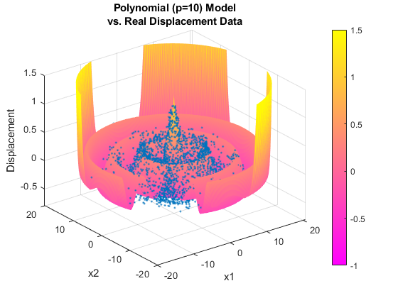

Contents
Liam Jackson HW1 BE700 ML
Question 1
Part 1
close all, clear all, clc;
warning('off','MATLAB:polyfit:RepeatedPointsOrRescale')
warning('off','MATLAB:nearlySingularMatrix')
Importing / Sorting Data
[x1, x2, y] = textread('besseldata.txt', ' %f%f%f', 'headerlines', 1);
r = sqrt(x1.^2 + x2.^2);
r_norm = normalize(r);
data_arr = sortrows([x1, x2, r, r_norm, y], 3);
data_table = array2table(data_arr,...
'VariableNames', {'x1','x2','r','r_norm','y'});
Bessel Approx
k_bes = 1;
bes_approx = besselj(0, k_bes*data_table.r);
fig1 = figure(1);
dot_sz = 0.2;
line_w = 2.5;
scatter(data_table.r, data_table.y, dot_sz, '.');
hold on;
plot(data_table.r, bes_approx, 'LineWidth', line_w);
hold off;
title({'Timpanic Memb Displacement', 'approximated by Bessel Fxn (J_0)'});
xlabel('r');
ylabel('Intensity');
legend({'Real Data', 'J_0'});
Polynomial Approximations
max_poly_order = 14;
model_data = poly_model_vals(data_table, max_poly_order);
ry_polyvals_table = model_data.ry_polyvals_table;
Calculate Residuals
residuals_table = res_table(ry_polyvals_table)
Plotting LS Poly fits
data_labels = ry_polyvals_table.Properties.VariableNames;
fig2 = figure(2);
sgtitle({'Membrane Displacement Data', 'vs. OLS Polynomial Fits'});
number_of_plots = max_poly_order;
for plot_id = 1:number_of_plots
subplot(number_of_plots / 2, 2, plot_id);
scatter(ry_polyvals_table.r, ry_polyvals_table.y, dot_sz, '.');
hold on;
plot(ry_polyvals_table.r, ry_polyvals_table.(string(data_labels(plot_id + 2))), 'LineWidth', line_w)
hold off;
xlabel('r');
ylabel('Displacement');
legend({'y real', string(data_labels(plot_id + 2))});
end
Part 2
20 rounds of (k = 5) Cross Validation
cv_rounds = 20;
k_cv = 5;
PE_arr = zeros([cv_rounds, max_poly_order]);
MSE_arr = zeros([max_poly_order, k_cv, cv_rounds]);
all_cv_poly_coeffs = zeros([max_poly_order + 1, max_poly_order, k_cv, cv_rounds]);
for cv_round = 1:cv_rounds
binned_data_struct = bin_this_data(data_arr, k_cv);
binned_data_cell = binned_data_struct.cell;
bin_indices = 1:k_cv;
for test_bin = 1:k_cv
train_bins = bin_indices(1:end ~= test_bin);
train_data_cell = binned_data_cell(train_bins);
train_data_arr = sortrows(cat(1, train_data_cell{:}), 3);
test_data_arr = sortrows(cell2mat(binned_data_cell(test_bin)), 3);
train_data_table = array2table(train_data_arr,...
'VariableNames', {'x1','x2','r','r_norm','y'});
test_data_table = array2table(test_data_arr,...
'VariableNames', {'x1','x2','r','r_norm','y'});
model_train_struct = poly_model_vals(train_data_table, max_poly_order);
cv_ry_polyvals_table = model_train_struct.ry_polyvals_table;
cv_coeffs_arr = model_train_struct.coeffs_arr;
all_cv_poly_coeffs(:, :, test_bin, cv_round) = cv_coeffs_arr;
poly_zeros_pad = zeros([size(test_data_arr, 1), max_poly_order]);
model_poly_vals = [test_data_arr, poly_zeros_pad];
for poly_ord_ind = 1:max_poly_order
n_coeffs = poly_ord_ind + 1;
temp_coeffs = cv_coeffs_arr(1:n_coeffs, poly_ord_ind);
model_poly_vals(:, poly_ord_ind + 5) = polyval(temp_coeffs, model_poly_vals(:, 4));
end
temp_ry_polyvals_table = array2table([model_poly_vals(:, 3), model_poly_vals(:, 5), model_poly_vals(:,6:end)],...
'VariableNames', cv_ry_polyvals_table.Properties.VariableNames);
temp_residuals_table = res_table(temp_ry_polyvals_table);
MSE_arr(:, test_bin, cv_round) = temp_residuals_table.MSE;
end
PE_col = mean(squeeze(MSE_arr(:, :, cv_round)), 2);
PE_arr(cv_round, :) = PE_col';
end
PE_var_labels = cv_ry_polyvals_table.Properties.VariableNames;
PE_var_labels = PE_var_labels(3:end);
PE_row_nums = 1:cv_rounds;
PE_row_labels = "rnd" + PE_row_nums;
PE_table = array2table(PE_arr,...
'VariableNames', PE_var_labels,...
'RowNames', PE_row_labels)
Plotting PE values for each CV Round
fig3 = figure(3);
plot(PE_table{:,:}.');
title('PE values for 20 rounds of (k=5)-CV');
xlabel('Polynomial Model Order');
ylabel('Predictive Error');
legend(PE_table.Properties.RowNames, 'location', 'eastoutside');
Part 3
char({'A polynomial OLS-fit of order 10 seems to have the best',...
'compromise of accuracy and economy of variables. A substantial',...
'reduction in error occurs from order-9 to order-10, with no',...
'substantial decrease with additional (11, 12, 13, 14) order terms.'})
Part 4
data_table_opt = data_table;
x1 = data_table_opt.x1;
x2 = data_table_opt.x2;
r = data_table_opt.r;
y = data_table_opt.y;
opt_ord = 10;
beta_deg10 = ols_coeffs_data(r, y, opt_ord).beta;
beta_ud = flipud(beta_deg10);
[X1, X2] = meshgrid(-20:.2:20);
Y_opt = polyval(beta_ud, sqrt(X1.^2 + X2.^2));
Y_opt(1:75, 1:75) = NaN;
J0 = besselj(k_bes, sqrt(X1.^2 + X2.^2));
fig4 = figure(4);
scatter3(x1, x2, y, 15, '.');
hold on;
opt = surf(X1, X2, Y_opt, 'EdgeColor', 'none');
colorbar
colormap(spring)
caxis([-1 1.5])
hold off;
title({'Polynomial (p=10) Model', 'vs. Real Displacement Data'});
xlabel('x1');
ylabel('x2');
zlabel('Displacement');
zlim([-.8, 1.5]);
fig5 = figure(5);
scatter3(x1, x2, y, 15, '.');
hold on;
surf(X1, X2, J0, 'EdgeColor', 'none');
title({'Bessel Fxn J_0', 'vs. Real Displacement Data'});
xlabel('x1');
ylabel('x2');
zlabel('Displacement');
residuals_table =
14×3 table
Polynomial_Order Residual Sum MSE
________________ ____________ _________
1 425.17 0.085034
2 412.42 0.082483
3 369.4 0.073879
4 268.61 0.053722
5 168.66 0.033733
6 164.73 0.032945
7 105.34 0.021069
8 47.384 0.0094768
9 43.922 0.0087844
10 28.828 0.0057656
11 28.809 0.0057619
12 27.775 0.0055551
13 27.718 0.0055437
14 27.697 0.0055394
PE_table =
20×14 table
p=1 p=2 p=3 p=4 p=5 p=6 p=7 p=8 p=9 p=10 p=11 p=12 p=13 p=14
________ ________ ________ ________ ________ ________ ________ _________ ________ _________ _________ _________ _________ _________
rnd1 0.085065 0.082577 0.074357 0.054969 0.034563 0.033381 0.028947 0.0098362 0.01501 0.006425 0.0076866 0.0065539 0.0066 0.007173
rnd2 0.085108 0.082569 0.074034 0.054003 0.034081 0.033134 0.02323 0.0098505 0.010745 0.0059828 0.0059781 0.0058127 0.0056712 0.0056124
rnd3 0.085127 0.082699 0.074457 0.054531 0.034317 0.03327 0.023955 0.0097887 0.010689 0.005926 0.0060101 0.0057978 0.0056982 0.0055917
rnd4 0.085134 0.082691 0.074525 0.054411 0.034338 0.033372 0.024019 0.010069 0.011438 0.0059981 0.0060173 0.0057865 0.0056713 0.0056133
rnd5 0.085151 0.082621 0.074146 0.054444 0.0343 0.033315 0.023954 0.0096891 0.010574 0.0059484 0.0061251 0.0057965 0.0057017 0.0056887
rnd6 0.085094 0.082574 0.07405 0.053968 0.034146 0.033214 0.024222 0.0098553 0.01086 0.0059703 0.0060338 0.0057492 0.0056496 0.0056346
rnd7 0.085065 0.082532 0.074127 0.054713 0.034718 0.033477 0.023915 0.010057 0.011002 0.0060462 0.0060709 0.0058321 0.0058039 0.005669
rnd8 0.085165 0.08267 0.074137 0.054209 0.034092 0.033178 0.023494 0.0098238 0.010947 0.0059741 0.0060757 0.0058071 0.0056633 0.005611
rnd9 0.085079 0.082579 0.074176 0.054251 0.034168 0.033249 0.023309 0.0098935 0.01112 0.0059834 0.0060462 0.0058289 0.0056741 0.0056346
rnd10 0.085113 0.08259 0.074421 0.05493 0.034551 0.03328 0.028994 0.0099285 0.015095 0.0063835 0.0071666 0.0062601 0.0062755 0.0064473
rnd11 0.085114 0.082641 0.074214 0.054661 0.034494 0.033468 0.030297 0.0097173 0.013768 0.0063214 0.0076979 0.0062456 0.0062328 0.0066782
rnd12 0.08514 0.082657 0.074335 0.054417 0.034287 0.03327 0.023885 0.0097416 0.010559 0.0059619 0.0060269 0.0057999 0.0057365 0.0056385
rnd13 0.085102 0.082591 0.074369 0.055 0.034708 0.033352 0.028202 0.010054 0.015138 0.006425 0.0074468 0.0063672 0.0063295 0.0071823
rnd14 0.085142 0.082635 0.074044 0.054013 0.034197 0.033606 0.023737 0.0099251 0.011152 0.0059168 0.0060737 0.0057321 0.0056684 0.005625
rnd15 0.085182 0.082649 0.074122 0.054086 0.034096 0.033247 0.024024 0.0097745 0.01078 0.0059868 0.006066 0.0058092 0.0056815 0.0056309
rnd16 0.085159 0.082704 0.075006 0.055209 0.034545 0.033553 0.030413 0.0098368 0.014896 0.0065433 0.0082615 0.0060834 0.0060924 0.005886
rnd17 0.08509 0.082586 0.074257 0.05483 0.034678 0.033489 0.029756 0.009869 0.014629 0.0062817 0.0070891 0.006335 0.0061493 0.0058104
rnd18 0.085052 0.082557 0.074247 0.05421 0.033971 0.033215 0.02378 0.0098048 0.011342 0.0059427 0.0060055 0.0058236 0.005672 0.005597
rnd19 0.085087 0.082559 0.07409 0.054043 0.034102 0.033235 0.023818 0.0097457 0.010996 0.0059363 0.0060449 0.0057481 0.0056701 0.0056096
rnd20 0.085162 0.082648 0.074607 0.056379 0.035793 0.034067 0.039151 0.0099011 0.018097 0.0064823 0.0079107 0.0066796 0.0070284 0.007198
ans =
4×66 char array
'A polynomial OLS-fit of order 10 seems to have the best '
'compromise of accuracy and economy of variables. A substantial '
'reduction in error occurs from order-9 to order-10, with no '
'substantial decrease with additional (11, 12, 13, 14) order terms.'
